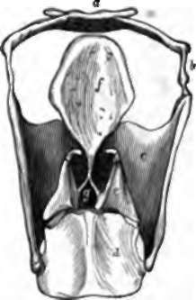
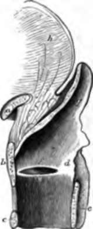
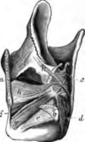
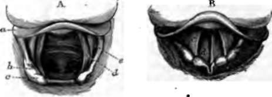

Chapter XVI. Voice And Speech
Description
This section is from the book "Animal Physiology: The Structure And Functions Of The Human Body", by John Cleland. Also available from Amazon: Animal Physiology, the Structure and Functions of the Human Body.
Chapter XVI. Voice And Speech
196. Voice
The organ of voice is the larynx, a modification of the upper part of the trachea, consisting of a framework of cartilages, lined with mucous membrane, and moved on one another by muscles.
The lowest cartilage of the larynx is called the cricoid cartilage. It forms a complete ring above the first cartilage of the trachea, and, while narrow in front, rises to a height of more than half an inch behind.
Above the cricoid, and partially embracing it, is the thyroid cartilage. This cartilage is open behind, and, at the upper border in front, projects forwards, making the prominence called "Adam's apple." In front, its lower border is a little above the cricoid, and the space thus left is filled up with elastic tissue, the crico-thyroid membrane; but at the sides its depth increases, and it sends upwards and downwards two pairs of cornua; the inferior cornua articulating with the sides of the cricoid cartilage, bo as to furnish a centre of rotation, and the superior being united by ligaments of some length to the hyoid bone.
Fig. 133. Cartilages of the Larynx, from behind, a, Hyoid bone; b, lateral thyrohyoid ligament; c, thyroid cartilage; d, cricoid; e, arytenoid cartilage, surmounted by cartilage of Santorini; f, epiglottis ; g, aperture of glottis, with vocal cord on each side.
Fig. 134. Mesial Section op Larynx, a, Hyoid bone; b, c, d, thyroid, cricoid, and arytenoid cartilages; e, true vocal cord; f, false vocal cord, and beneath it the ventricle of the larynx; g, epiglottis; A, tongue.
Surmounting the back part of the cricoid are the arytenoid cartilages, two bodies shaped like three-sided pyramids, articulated at their bases to the cricoid cartilage, and curved backwards at their apices, so as to give the mucous membrane which covers them an appearance in the middle line like the spout of a water-jug, from which they get their name. At the anterior angle of the base, they are prominent, and give attachment to elastic fibres which pass directly forwards to be attached to the thyroid cartilage close to the middle line. These are what in strict anatomical language are known as the vocal cords.
But by the term vocal cords are most frequently understood, not merely the few fibres mentioned, but likewise the folds of mucous membrane in which they lie. The mucous membrane, disposed cylin-drically in the interior of the cricoid cartilage, approaches the middle line from each side to cover the elastic fibres described; and is then abruptly reflected outwards, forming on each side a hollow called the ventricle, prolonged into a little saccule in front, and limited above by a semilunar fold called the false vocal cord. The first-mentioned folds, or true vocal cords, are those by whose vibration the voice is produced; in vocalization they are approximated to the middle line; they are protected with squamous epithelium from the force of the air which whistles past them, and have their position and tension regulated by muscles. The space between them is termed the glottis or rima glottidis.
Fig. 135. Muscles of the Larynx ; view from the left side behind, a, Section of thyroid cartilage, the left side of which is removed with the exception of b, the part articulating with the cricoid cartilage; c, arytenoideus muscle; d, posterior crico-arytenoi-deus; e, crico-thyroi-deus ; f, crico-thyroid ligament; g, crico-ary-tenoiileus lateralis; h, thyro-arytenoideus, its upper edge corresponding with the edge of the vocal cord; i, k, thyro-and aryteno - epiglotti-deus, resting on the aryteno epiglottidean fold of mucous membrane. A portion of the mucous membrane is removed between h and k to show the position of the glottis.
The most important muscles of the larynx are: (1) a transverse arytenoid muscle, uniting the posterior surfaces of the arytenoid cartilages, and drawing those cartilages together when the larynx is shut; (2) a pair of posterior crico-arytenoid muscles, passing up from the back of the cricoid cartilage to the arytenoid cartilages at their outer angles, and rotating the vocal cords outwards, so as to widen the glottis; (3) a pair of lateral crico-arytenoid muscles, passing backwards from the sides of the cricoid to the outer angles of the arytenoids, and rotating the vocal cords inwards to the middle line; (4) a pair of thyroarytenoid muscles lying in the folds of the vocal cords, and shortening them by rotating the thyroid cartilage upwards on the cricoid; (5) a pair of crico-thyroid muscles, seen from the front, and stretching the vocal cords by rotating the thyroid cartilage downwards.
197. If the larynx be examined by means of a laryngoscope, that is to say, a mirror placed in the back part of the throat, so as to throw light down on the larynx and reflect its image to the eye of the observer, it will be seen that, as soon as vocalization commences, the vocal cords spring toward the middle line, leaving only a chink between them, and that they as quickly recede when the voice ceases. Their edges are turned one toward the other when in action; but at other times they are everted. This agrees exactly with the results got by tying a bit of india-rubber or other membrane to the end of a tube, and holding it so as to leave a chink between two tight edges. As long as the edges are inclined one to the other, or are parallel, a note is produced by blowing through the tube; but when the edges are everted, the sound ceases.
Fig. 136. Larynx, from above; laryngoscopic views: A, in deep respiration, showing the trachea down to its bifurcation; B, in uttering a high pitched note, a, Epiglottis; b, c, swellings corresponding to cartilaginous nodules of Wrisberg and Santorini; d, true vocal cord; e, false vocal cord. After Czermak.
The note produced by vibrating strings and laminæ is dependent on two things, namely, the length of the string or free edge, and the degree of tension. Both these principles are illustrated in the human larynx. The reason why the voices of women and children are higher in pitch than those of adult men is, that in women and children the larynx is smaller and the vocal cords are shorter; and in boys, at the age when the voice begins to grow rough, an obvious enlargement of the larynx, as judged by the prominence of the pomum Adami, may be observed. But the different notes of any one voice are produced by varying tension of the vocal cords. This may be easily proved by placing a finger over the space occupied by the crico-thyroid membrane and running over the gamut, when the thyroid cartilage will be felt gradually coming down over the cricoid, in the manner which has been already shown to stretch the vocal cords. At the same time, the whole larynx rises more nearly to a level with the tongue, and hence the comparative clearness of the higher notes.
The various cavities above the level of the vocal cords, acting as resonating chambers, determine the timbre of the voice. First of these come the ventricles of the larynx, while above are the pharynx, nasal fossæ, and frontal, sphenoidal, and maxillary sinuses (p. 222); and among various causes which combine to alter the tones of the voice in old age, may be mentioned the tendency of the entrances to these sinuses to get contracted or blocked.up; for, although the dimensions of the various air-cavities of the skull get larger in advanced life, the entrances into them become smaller. From the low position of the larynx, in the utterance of deep notes, overshadowed as it then is by the root of the tongue, the voice is thrown more backwards in them, and reverberates more in the various sinuses.
Continue to:
- prev: 194. The Cochlea
- Table of Contents
- next: 198. Speech